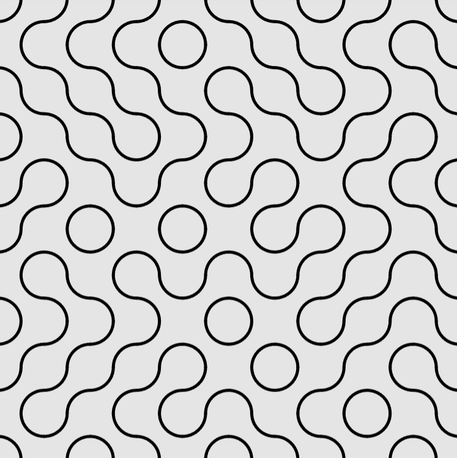
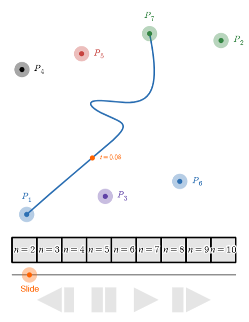

Recent findings by public health experts recommend less screen time for our students, so it is vital that the screen time they get is thought provoking and supports curiosity. Inspired in part by Desmos' YouTube Shorts, I try to generate sketches that just invite students to 'play'.
One example of this kind of sketch involves Truchet Tiles, which can be built from many different shapes. In this case, however, the tiles are just made of quarter circles. Students are invited to play with the sketch, and then reduce the sketch to its simplest case before answering the question and, hopefully, asking their own questions. (Click on the image to view sketch.)
Recognize that the power of this sketch is that, while it is certainly mathematical, it just invites students to explore. Another example of a sketch with this principle in mind involves a cool type of parametric curve used in digital animation called a Bezier Curve. Students can interact with the sketch to change the number of attractor points, as well as the shape of the curve. (Again, Click on the image to view the sketch.))
